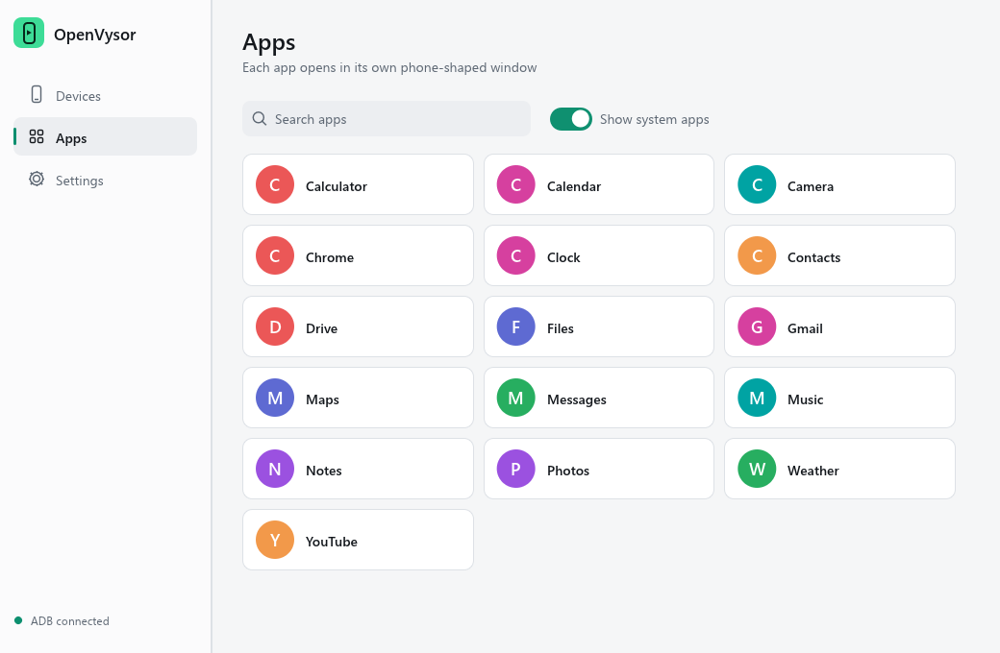

Your Android phone, in a window on your PC.
OpenVysor mirrors and controls an Android phone on Windows 10 and 11. It is one small native app, free and open source, and still in early development.

Install
There is no prebuilt download yet, so you build the app once from source. You need Windows 10 or 11 x64.
- Install ADB:
winget install Google.PlatformTools - Install Rust and Git. Choose the default MSVC option in the Rust installer, and let it add the Visual Studio C++ build tools if it asks.
- Download and build OpenVysor:
git clone -b native-rust-app https://github.com/SahinurDEV/OpenVysor.git cd OpenVysor\native cargo build --release - Run
target\release\openvysor-native.exe. It is a single portable file, so you can copy it anywhere.
Connect a phone
USB is the simplest way to start.
With a USB cable
- On the phone, open Developer options and turn on USB debugging.
- Connect a USB data cable and tap Allow on the phone.
- In OpenVysor, choose Mirror screen on the Devices page.
Over Wi-Fi (in testing)
- Put the phone and PC on the same Wi-Fi.
- Choose Connect over Wi-Fi in OpenVysor.
- On the phone, open Developer options, then Wireless debugging, and scan the QR code. A pairing code or IP address also works.
Use it
Every mirror opens as its own phone-shaped window, showing only the screen.
| Mirror screen | Shows the whole phone in one window. |
| Open an app | Opens one app in its own window. Open several and arrange them side by side. |
Alt + ← / → | Switches between phone windows. |
F11 | Turns full screen on or off. |
| Drop a file | An APK installs on the phone; any other file is sent to it. |
| Settings | Theme, resolution, quality, frame rate, phone sound and clipboard sync. |
Troubleshooting
- ADB is not found
- Install it with the winget command above and restart OpenVysor, or set
OPENVYSOR_ADBto the full path ofadb.exe. - The phone is not listed
- Use a data cable rather than a charge-only cable, and check the phone for an Allow prompt.
- The picture appears but touches do nothing
- Some manufacturers need an extra setting. On Xiaomi phones, turn on USB debugging (Security settings).
What works today
Only features tried on a real phone are listed as tested. Testing so far used one phone running Android 16.
Tested on a real phone
- Live video of an app in its own window
- Tapping on the phone with the mouse
- Phone-shaped windows, toolbar and full screen
- Clean exit with nothing left running
Written, still being tested
- Whole-phone mirroring
- Dragging, scrolling, typing and rotation
- Reconnecting automatically
- Clipboard sync and drag and drop
- Wi-Fi pairing and phone sound on the PC
- Recording to MP4
Not done yet
- Prebuilt download or installer
- Hardware video decoding (it uses the CPU)
- Sound in recordings
- Latency measurements
Docs
The full project documents are on GitHub.